EJERCICIO 2 — Descripción paso a paso para desplegar el tema Jekyll "Lagrange" en GitHub Pages
Fecha: 19 de noviembre de 2025
Introducción
En este documento se describen, en detalle y en formato paso a paso, los procesos para:
- Importar, configurar y probar el tema Jekyll
Lagrangeen GitHub Pages. - Personalizar la página principal, páginas estáticas y posts.
- Desplegar el sitio en GitHub Pages usando la rama
gh-pages.
1) Forking del repositorio original de Lagrange
La manera recomendada para importar un tema es mediante fork. Esto mantiene el tema sincronizado con el repositorio original y permite actualizaciones futuras.
Pasos:
- Accede al repositorio oficial de Lagrange:
- Visita:
https://github.com/LeNPaul/Lagrange - Este es uno de los repositorios más populares del tema Lagrange.
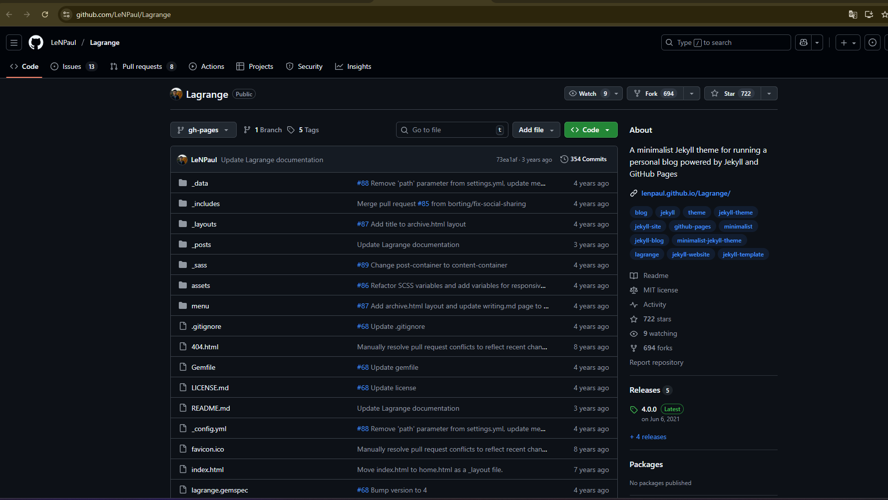
- Hacer Fork del repositorio:
- Haz clic en el botón "Fork" en la esquina superior derecha.
- Selecciona tu cuenta de GitHub como destino.
- GitHub creará una copia del repositorio en tu cuenta.
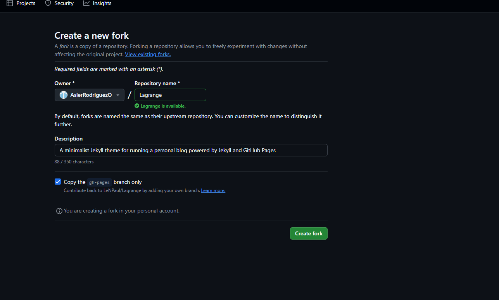
- Clonar el repositorio forkeado en tu máquina local:
git clone https://github.com/tu_cuenta_github/Lagrange.git
cd Lagrange
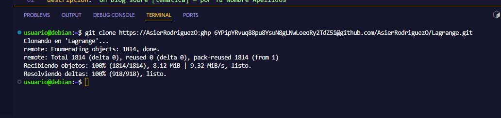
2) Entender la estructura de Lagrange
Antes de personalizar, es importante conocer la estructura del tema:
Lagrange/
├── _includes/ # Componentes HTML reutilizables
├── _layouts/ # Plantillas de página
├── _posts/ # Tus artículos/posts del blog
├── _sass/ # Estilos SCSS
├── assets/ # Imágenes, CSS compilado, etc.
├── _config.yml # Configuración principal
├── Gemfile # Dependencias de Ruby/Bundler
├── index.html # Página principal
├── about.html # Página "Acerca de"
└── README.md # Documentación del tema
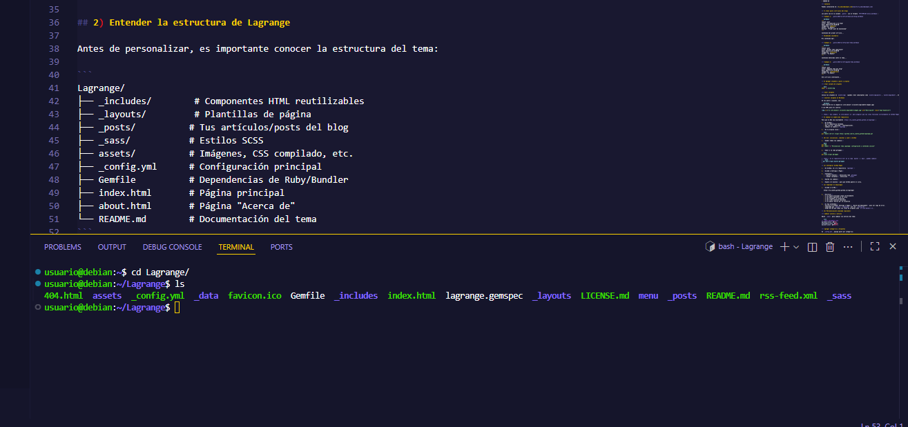
3) Configurar _config.yml
El archivo _config.yml es donde personalizas tu sitio. Aquí está la configuración básica para Lagrange:
# Build settings
markdown: kramdown
highlighter: rouge
permalink: /:title
plugins: [jekyll-paginate, jekyll-sitemap, jekyll-feed, jekyll-seo-tag]
# Customise atom feed settings (this is where Jekyll-Feed gets configuration information)
title: 'LagrangeAsier'
description: 'Primer tema lagrange Jekyll personalizado por Asier Rodriguez Ormaechea'
author: 'Asier Rodriguez Ormaechea'
url: 'https://AsierRodriguezO.github.io/lagrange' # the base hostname & protocol for your site
baseurl: '/lagrange'
language: 'ES-ES'
copyright: '2025, Asier'
# Configuración del tema
theme: lagrange
# Configuración del blog
paginate: 5
paginate_path: "/blog/page:num"
# Redes sociales (algunos temas usan esto)
github_username: "AsierRodriguezO"
# Construcción
markdown: kramdown
permalink: /blog/:year/:month/:day/:title/
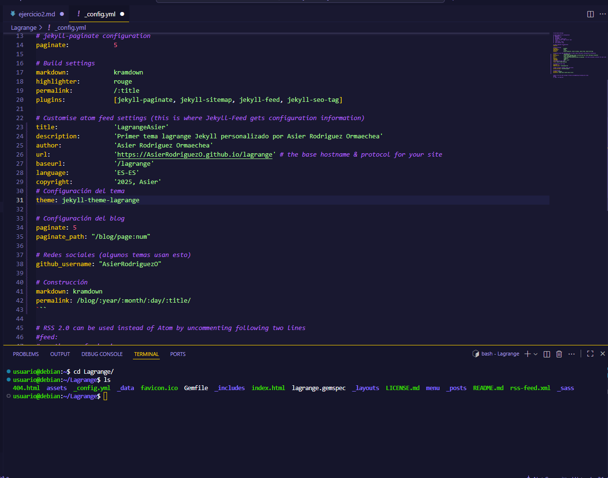
4) Instalar dependencias y probar localmente
- Instalar Bundler y dependencias:
gem install bundler
bundle install
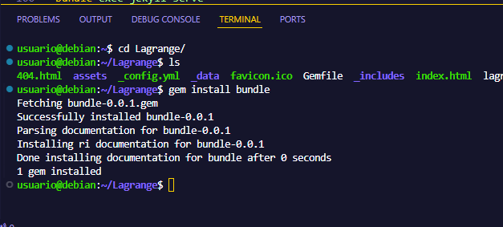
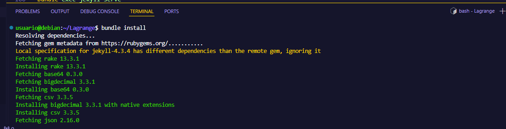
5) Personalizar la página principal (index.html)
La página principal de Lagrange es el punto de entrada. Personalízala según tu temática:
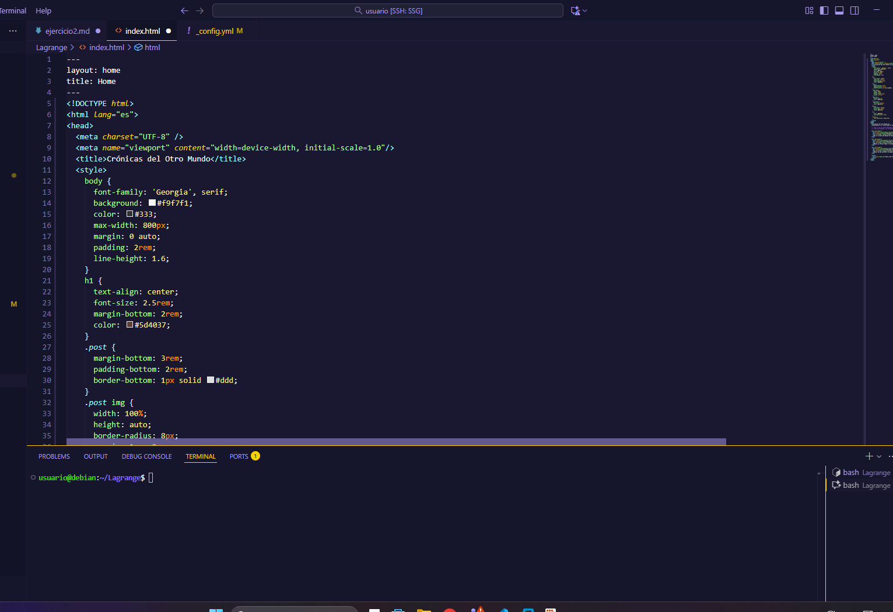
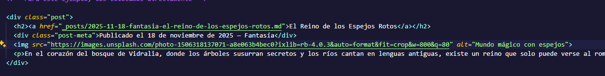
6) Personalizar la página "Acerca de" (about.html o about.markdown)
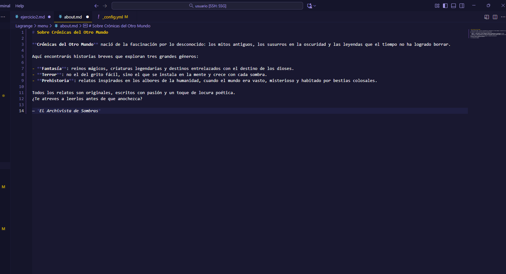
7) Crear posts (artículos del blog)
Los posts van en la carpeta _posts/ con el formato YYYY-MM-DD-titulo.markdown:
Exatamente igual que en Minima.
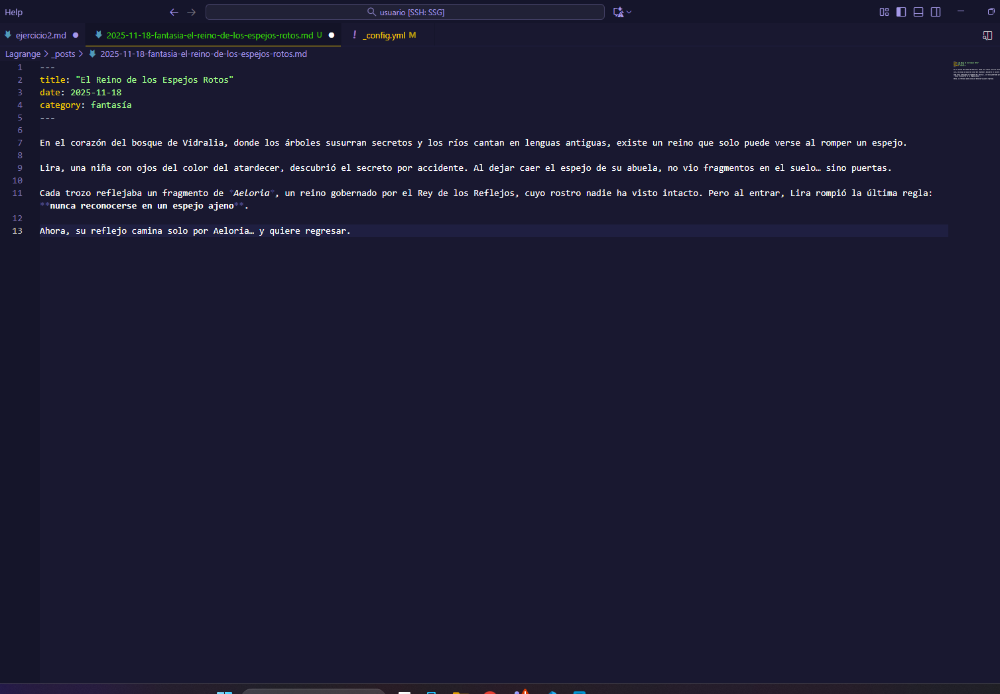
8) Agregar imágenes a posts y páginas
en este caso voy a usar solo url de internet pero si quiero usar imagenes locales las pongo en assets/img/ igual que en el tema Minima.
10) Git: inicializar, comitear y subir a GitHub
- Añadir todos los cambios:
git add .
git commit -m "Personalizar tema Lagrange: configuración y contenido inicial"
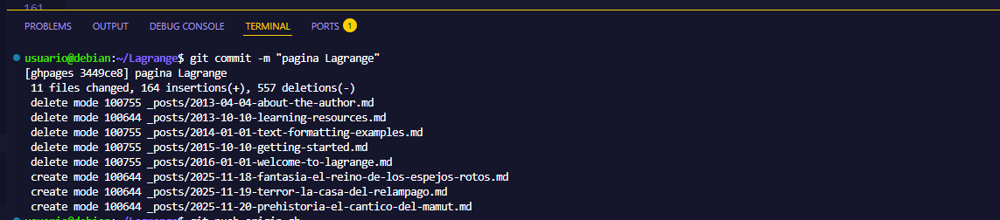
- Subir a la rama gh-pages:
git push origin gh-pages
11) Configurar GitHub Pages
-
En GitHub, ve a tu repositorio
lagrange -
Accede a Settings → Pages
-
Configura:
- Source (Fuente): Selecciona rama
gh-pages - Folder (Carpeta): Selecciona
/ (root)
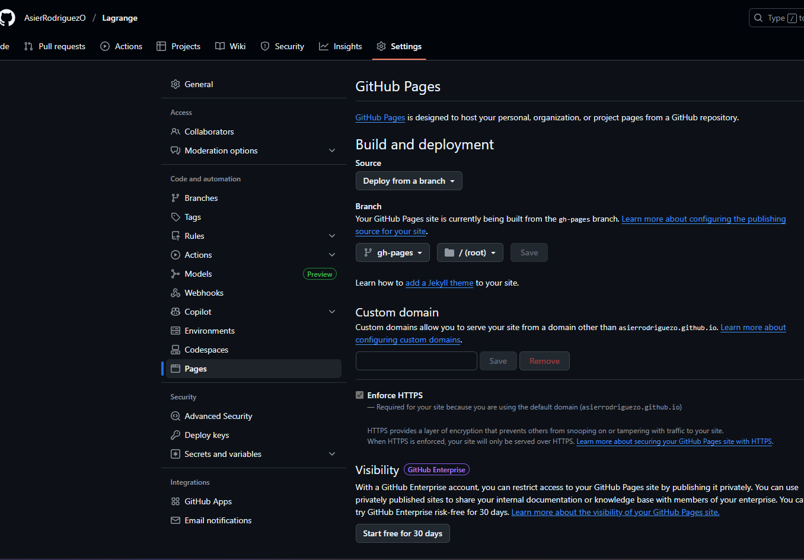
12) Comprobar el despliegue
- Accede a la URL:
https://AsierRodriguezO.github.io/lagrange/
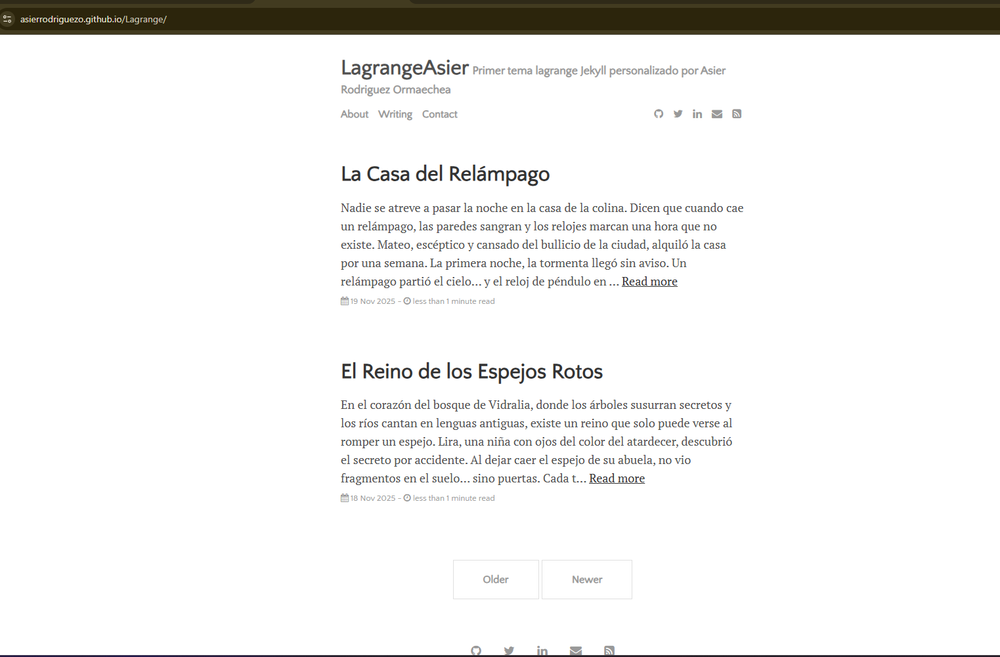